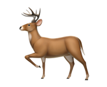
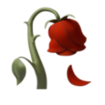
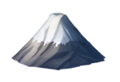
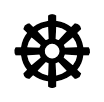
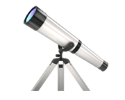

#veryjazzed is a boutique music rights management group. Gradient
since 2013. Our roster is special, our artists are special, we are
special. We understand who we are serving and to what end. We are
fixed on quality, people, and growth. We have our own language. We
take small steps early and often. Our network is interdependent. We
share knowledge and resources freely and without conditionals. We
leverage the finite against our unending ability to create new and
inspired works. We pride ourselves in recognizing strengths and
bridging blindspots. We are inspired makers.

We have three sides. We are public facing: promoting works, tours, and
success stories. We are artist facing: managing the needs, visions,
and admin for our artists. We are industry facing: building an
infrastructure and partnering with some of the most earnest and
integral companies in the space. We are always connecting with new
people in each of these domains. Our model is to find people of agency
and build difficult things with them.

We believe producing great works is simple but detailed. The alignment
of the creator, their story, the work, and the vehicle they choose to
communicate it. If we can get organized with these elements, we feel
we have found success: earnest recordings, clarity of persona,
step-by-step narrative, stimulating visuals, malleable marketing,
leverageable live performances, honest sm, high-value merch, and
archiving the work of our lives in an organized manner. When a project
gets on radar, we do our best to see it for what it is, what it could
be, and help facilitate the delta between the two. We are super
flexible, always reverting to first principles when deciding what is
our next and best step is.

\ If you are a listener, a maker, or a builder and you resonate with
what we are working to achieve, we should know about each other. We
would love to hear what you are excited about and how we might be a
valuable resource. Reach out to us.